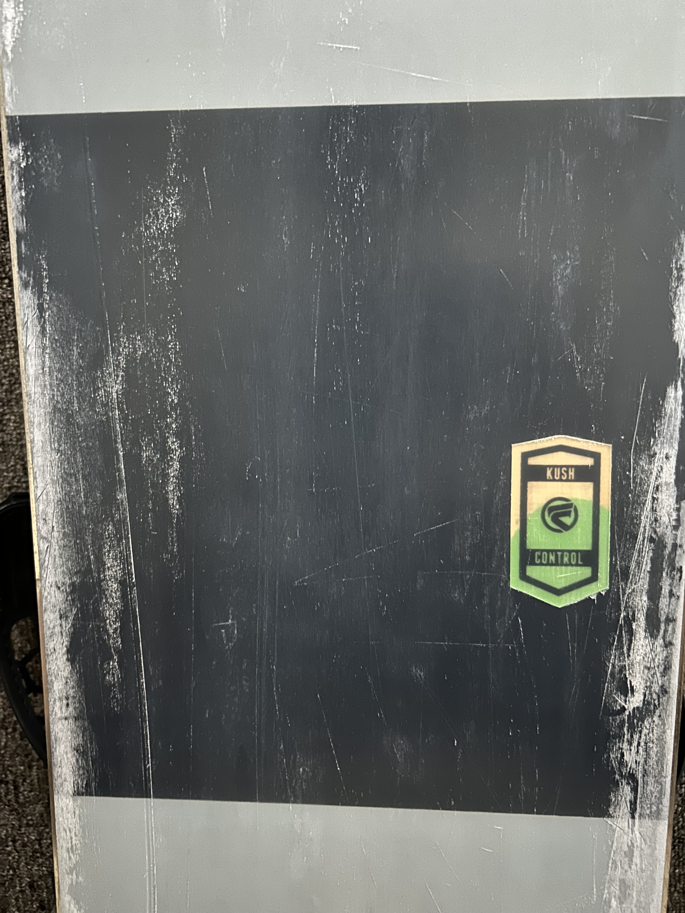
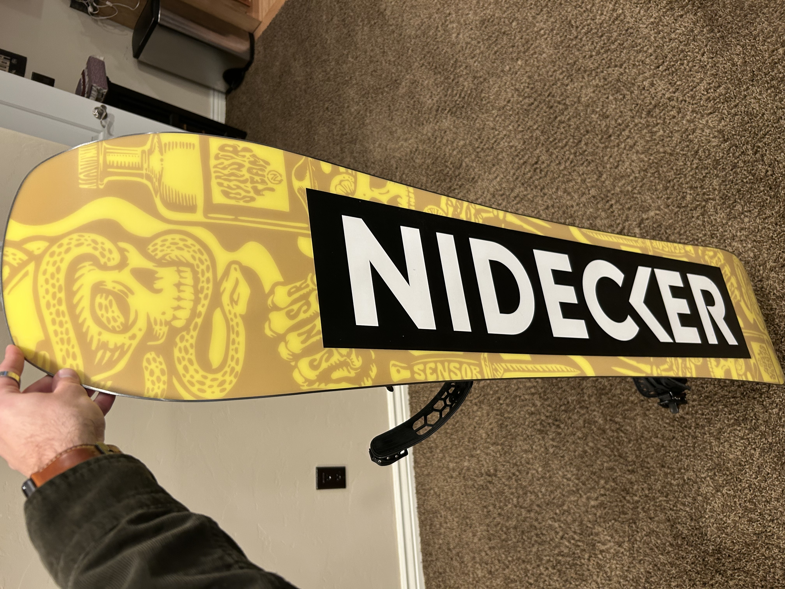
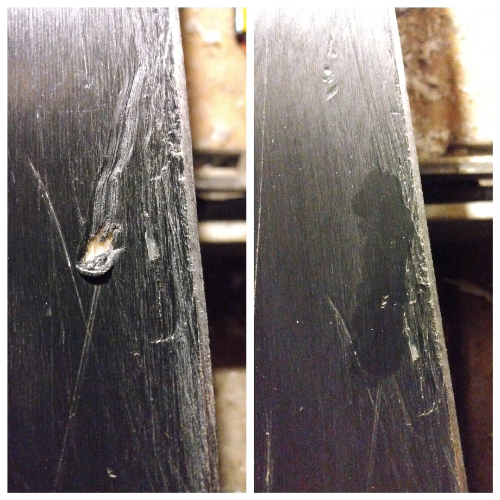

Welcome to Tune Pro — Quality Snowboard Waxing Made Simple.
Keep your board fast, smooth, and ready for every run.
From hot waxes to basic tunes, I make board maintenance easy.
Dry base slowing overall speed

Edges lacking wax causing drag

Freshly waxed board ready to rideScratches that benefit from a fresh waxDry tips affecting turn control and glide on snow

Core shot requiring repair with before and after example